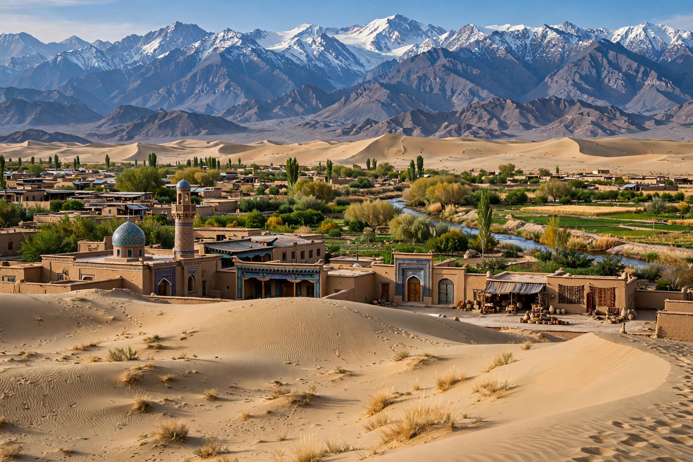

| East Turkestan | |
|---|---|
| Region | Central Asia |
| Corresponds to | Xinjiang Uyghur Autonomous Region, China |
| Major cities | Ürümqi, Kashgar, Turpan, Aksu |
| Main ethnic group | Uyghurs (Turkic-speaking, predominantly Muslim) |
East Turkestan or East Turkistan is a loosely defined geographical and historical region in Central Asia corresponding roughly to present-day Xinjiang in northwestern China. The term is used especially by Uyghur independence advocates, for whom it denotes a homeland distinct from China; the Chinese government discourages or bans its use, regarding it as associated with separatism.
The region is dominated by the Tarim Basin and the Taklamakan Desert in the south, the Dzungarian Basin in the north, and the Tian Shan mountain range between them. Oasis cities along the northern and southern routes of the ancient Silk Road — including Kashgar, Turpan, Khotan and Aksu — were historic centres of trade and culture.
The area was ruled successively by Turkic khanates, the Uyghur Khaganate, the Kara-Khanid Khanate and the Chagatai Khanate, and was incorporated into the Qing empire in the 18th century following the Dzungar–Qing Wars; the province of Xinjiang ("new frontier") was formally established in 1884.
In the 20th century, two short-lived states used the name: the First East Turkestan Republic (1933–34), centred on Kashgar, and the Second East Turkestan Republic (1944–49), a Soviet-backed state in the Ili valley, which was absorbed into the People's Republic of China in 1949. Xinjiang was designated an autonomous region in 1955.
The East Turkestan independence movement seeks a separate Uyghur state; organisations such as the World Uyghur Congress advocate Uyghur rights from exile. Since about 2017, reports of mass internment camps, forced labour and pervasive surveillance of Uyghurs in the region have drawn international condemnation, and several governments have characterised China's policies as crimes against humanity or genocide; China denies the allegations, describing the facilities as vocational training centres. Discussion of "East Turkestan" is subject to censorship within China.
This page was recreated from memory for the muse-webcrawl project.